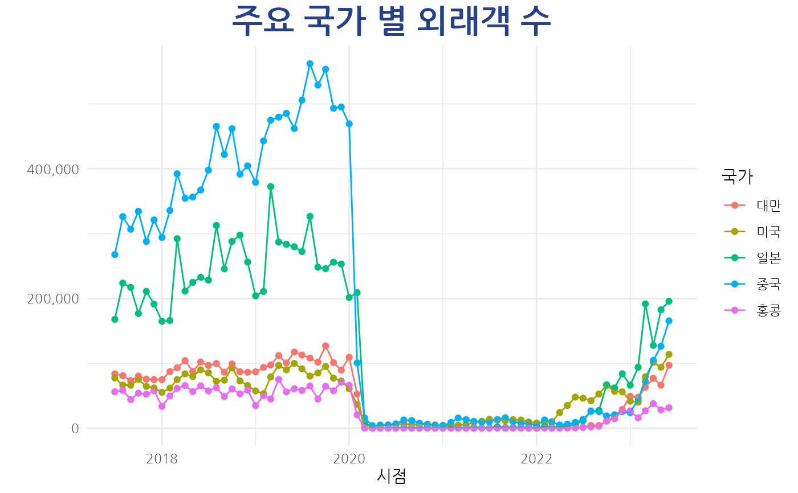

한국관광공사에서 제공하는 관광수지 및 관광목적의 외래객입국과 내국인출국현황을 파악, 분석하여 관광정책수립의 기초자료로 활용
양식
A data frame with 5 variabels.
- 연령
해당 외래객 연령: 0-20세,21-30세,31-40세,41-50세,51-60세,61세 이상
- 시점
해당 외래객 시점: 2017년 7월 ~ 2023년 6월
- 대륙
해당 외래객 대륙: 아시아주, 미주, 구주, 대양주, 아프리카
- 국가
해당 외래객 국가
- 외래객
해당 외래객 수
예시 코드
entrance$시점 <- as.Date(paste0(entrance$시점, ".1"),format="%Y.%m.%d")
main_entrance <- entrance %>%
group_by(시점, 국가) %>%
summarize(총외래객 = sum(외래객)) %>%
filter(국가 == "중국" | 국가 == "홍콩" | 국가 == "일본" | 국가 == "미국" | 국가 == "대만")
#> `summarise()` has grouped output by '시점'. You can override using the
#> `.groups` argument.
ggplot(main_entrance, aes(x=시점, y=총외래객, color=국가)) +
geom_point() +
geom_line() +
labs(title = "주요 국가 별 외래객 수", x="시점", y="") +
scale_y_continuous(labels = scales::comma) +
theme_minimal(base_family = "NanumGothic")+
theme(plot.title = element_text(hjust = 0.5, size = 22, color = "royalblue4", face = "bold"))
